Equipe: Beatriz Vieira dos Santos e João Vitor Rodrigues Araújo · Curitiba, 2026
Tema: mobilidade elétrica urbana. A Autoeletric é uma loja virtual de veículos autopropelidos elétricos (patinetes, skates, monociclos, bicicletas elétricas e scooters) e acessórios (capacetes, carregadores, baterias e iluminação). A compra é feita pelo site e o produto é retirado na loja física em Curitiba; não há entrega.
Público-alvo: adultos (18+) que procuram um meio de transporte elétrico que não exige CNH, conforme a Resolução CONTRAN nº 996/2023.
Objetivos:
| Ferramenta | Uso |
|---|---|
| Visual Studio Code | Editor de código. |
| Google Chrome (DevTools) | Testes, depuração do JavaScript e teste em tamanho de celular. |
| Bootstrap 5.3.8 | Grade responsiva, menu, dropdown, modal, alertas e validação de formulários. CSS pela CDN jsDelivr e JS em js/bootstrap.bundle.min.js. |
| localStorage | Guarda clientes, sessão, carrinho, pedidos, estoque e mensagens (simula um banco de dados). |
| Imagens SVG | Ilustrações dos produtos feitas em código SVG. |
| MDN e documentação do Bootstrap | Consulta. |
css/style.css, com variáveis de cor, Flexbox, Grid e media queries para celular, tablet e computador.js/dados.js (produtos e categorias) e js/app.js (funcionamento do site).| Site | O que usamos como inspiração |
|---|---|
| Eco Drive Mobilidade ecodrivemobilidade.com.br | Loja de Curitiba do mesmo segmento: faixa de vantagens no topo (sem CNH e sem emplacamento), categorias com imagem, produtos em destaque com preço e ênfase nos autopropelidos de até 1.000 W. |
| Bee Brasil bee-brasil.com | Veículos organizados em linhas/categorias, banner de destaque na página inicial e acessórios que complementam o veículo. |
| Ambtus ambtus.com.br | Categorias com descrição curta, modelos em destaque com preço e botão "Ver detalhes" e página sobre a loja. |
| Integrante | Tarefas |
|---|---|
| Beatriz Vieira dos Santos | Pesquisa do tema e da legislação, estudo de UX/UI, cores e tipografia, páginas Início, Retirada, Regras, Sobre e Contato, textos. |
| João Vitor Rodrigues Araújo | Estrutura do projeto, CSS e responsividade, páginas Veículos, Acessórios, Produto, Carrinho, Login, Cadastro e Pedidos, JavaScript. |
| Os dois | Mapa do site, testes, correções e documentação. |
localStorage.?next=carrinho.html na URL).Caminho principal do usuário: escolher o produto → adicionar ao carrinho → entrar ou se cadastrar → conferir o resumo → confirmar → acompanhar o status → retirar na loja.
lang="pt-BR", label em todos os campos, aria-label em botões de símbolo, foco visível no teclado e bom contraste de cores.Verde-lima para lembrar energia elétrica, com verde quase preto para dar contraste.
| Cor | Código | Uso |
|---|---|---|
| Verde-lima | #b8f337 | Botões, destaques e faixa de título. |
| Verde quase preto | #0f1a14 | Textos, menu e rodapé. |
| Verde-escuro | #17301f | Destaque da página inicial e preços. |
| Cinza-claro | #f4f6ef | Fundo de blocos. |
| Cinza-esverdeado | #526157 | Textos secundários. |
| Vermelho | #c0392b | Erros e produto esgotado. |
Fonte: "Avenir Next", Avenir, "Segoe UI", sans-serif. São fontes sem serifa, fáceis de ler na tela e já instaladas no computador, então não precisam ser baixadas. Títulos em negrito forte (peso 800) e texto normal com espaçamento de linha 1,6.
index.html)
catalogo.html) → Produto (produto.html)acessorios.html) → Produto (produto.html)carrinho.html)login.html), Cadastrar (cadastro.html), Meus pedidos (pedidos.html)retirada.html)regulamentacao.html)sobre.html)contato.html)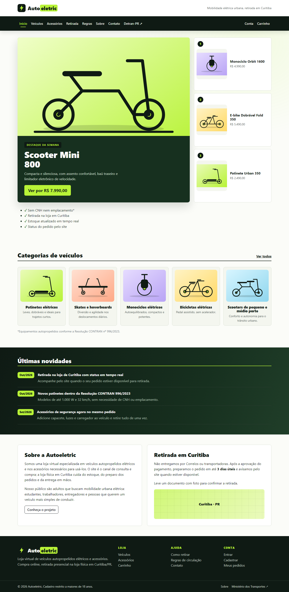
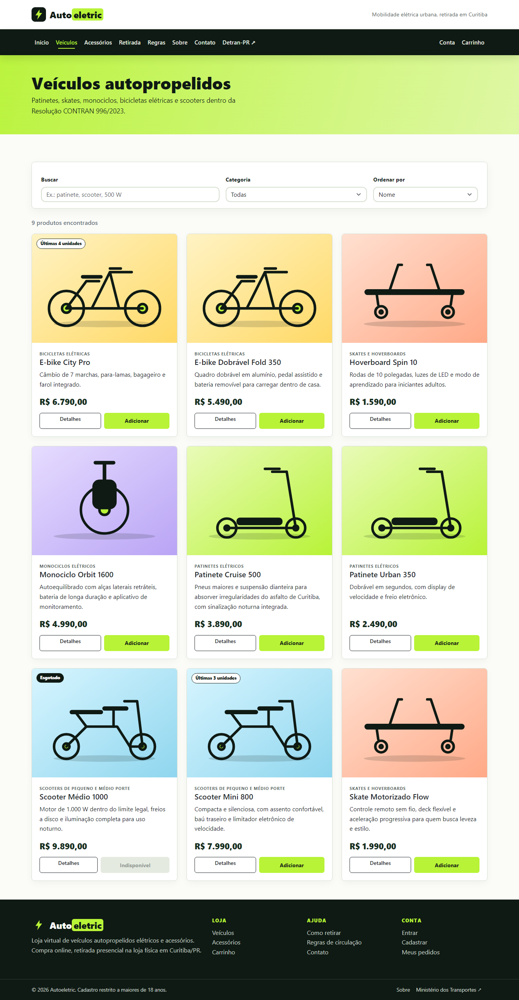
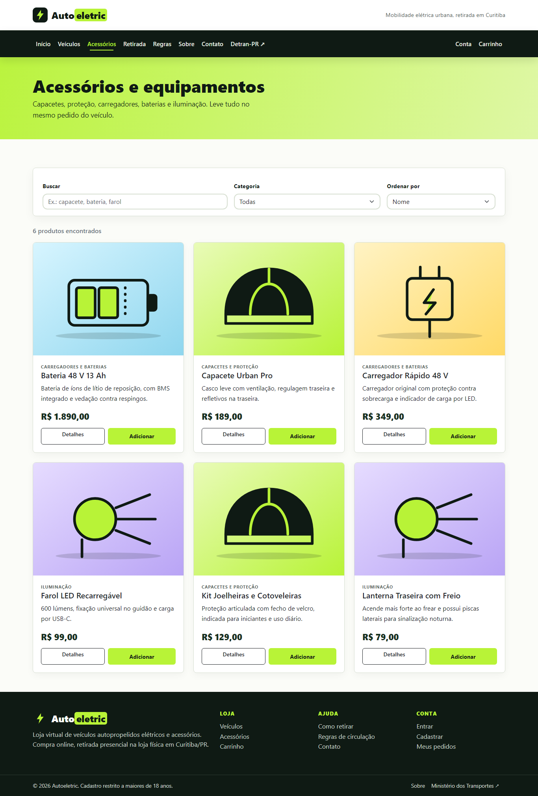
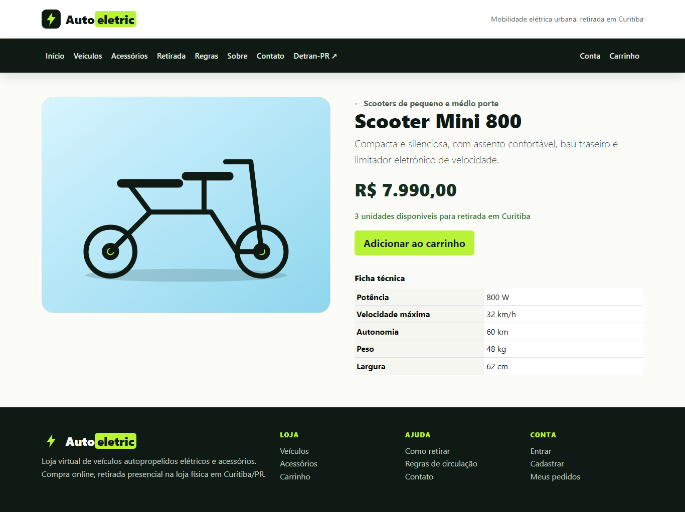
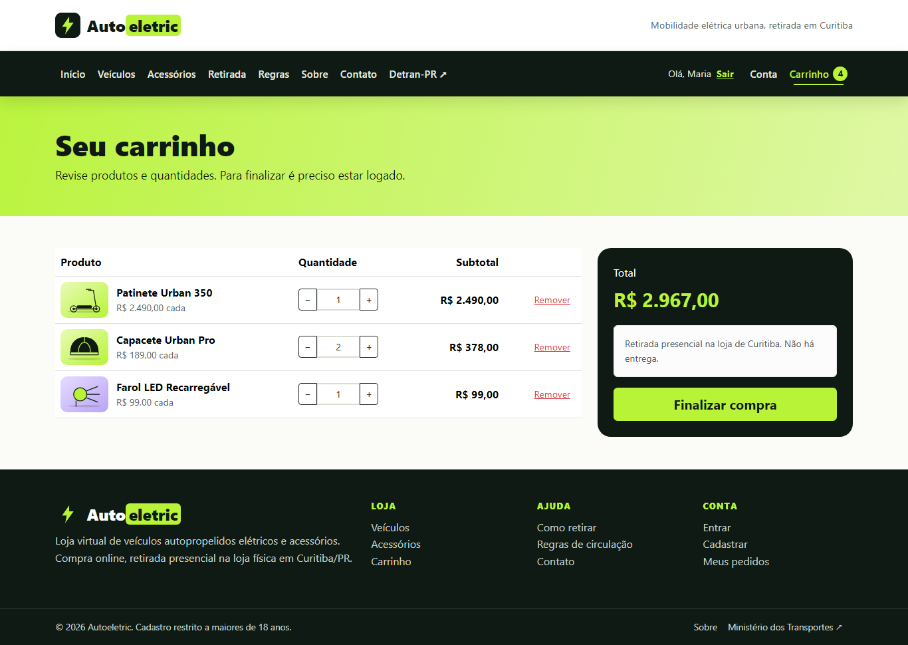
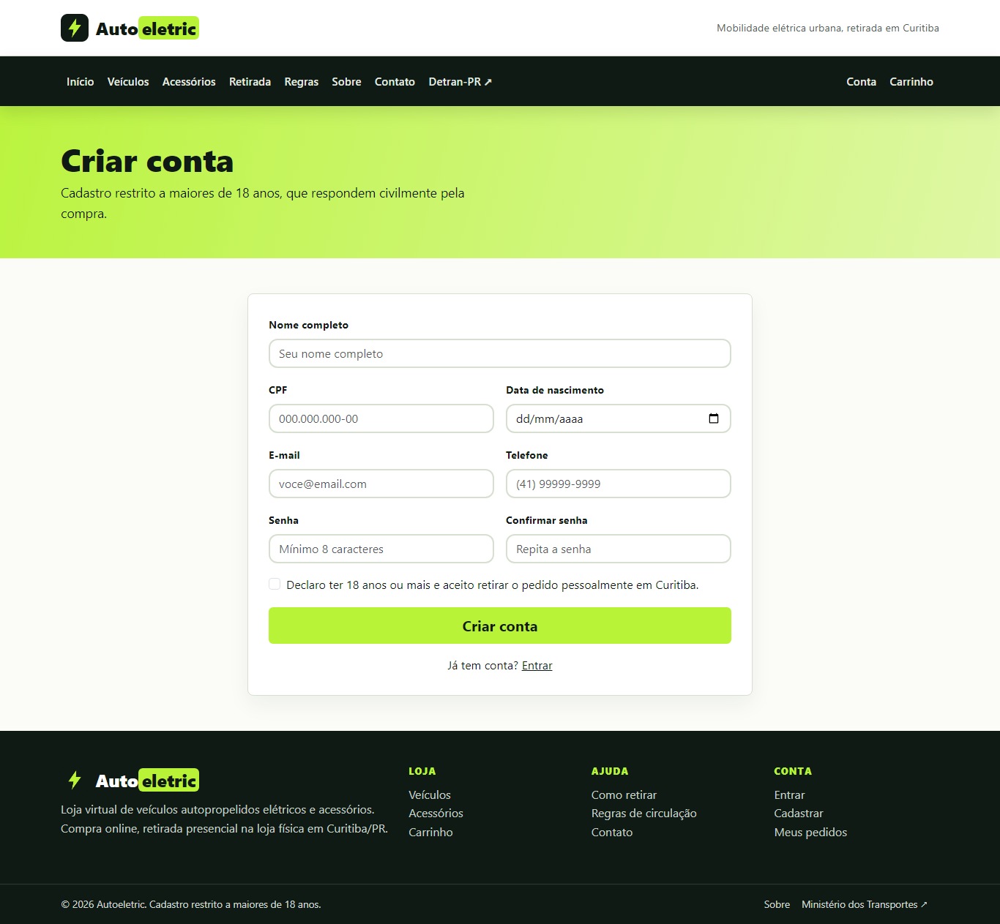
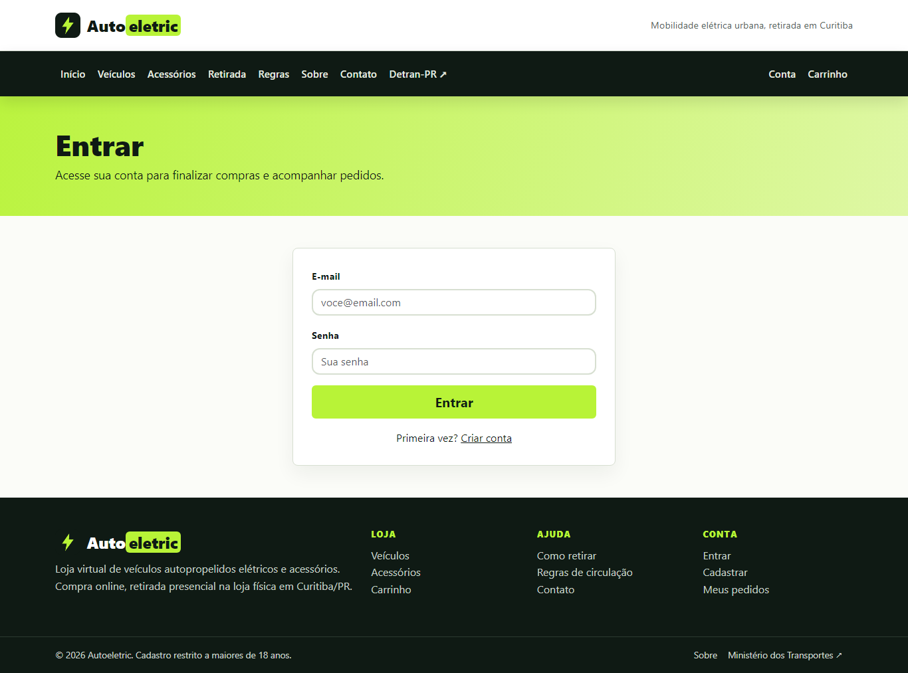
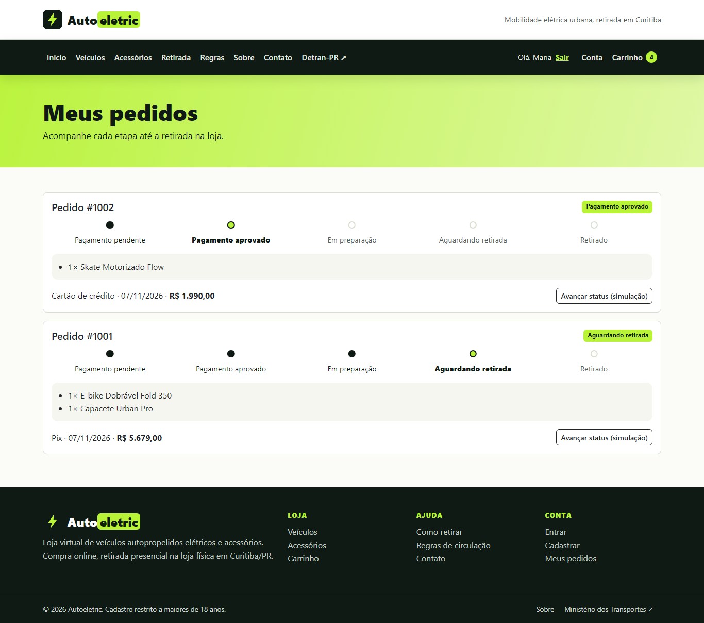
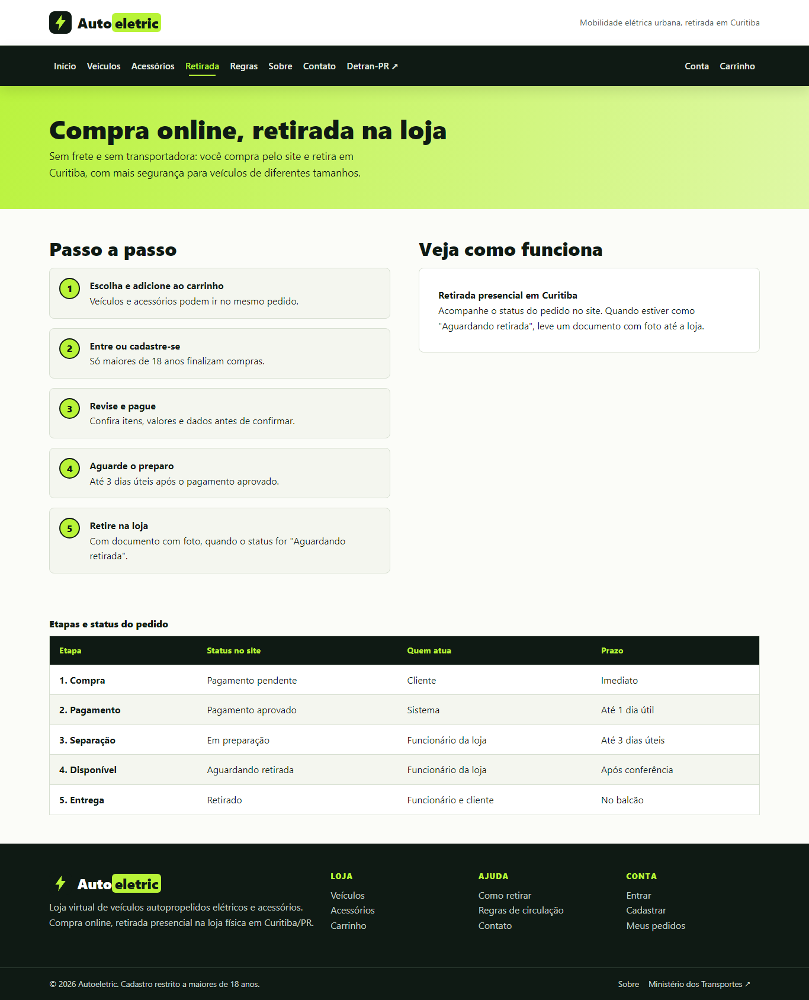
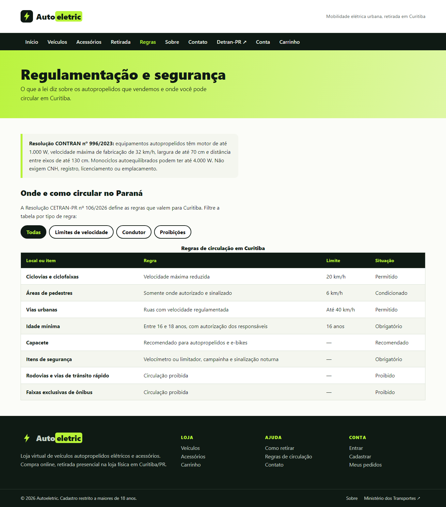
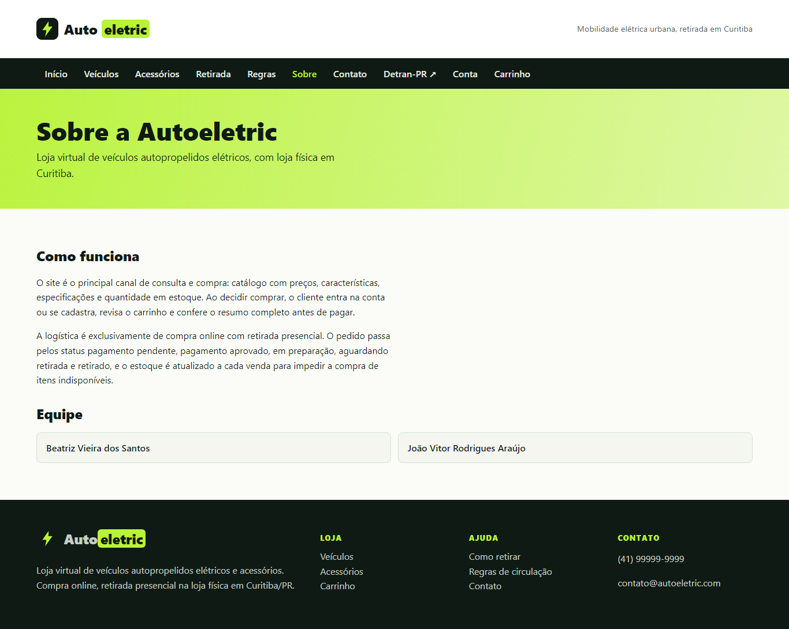
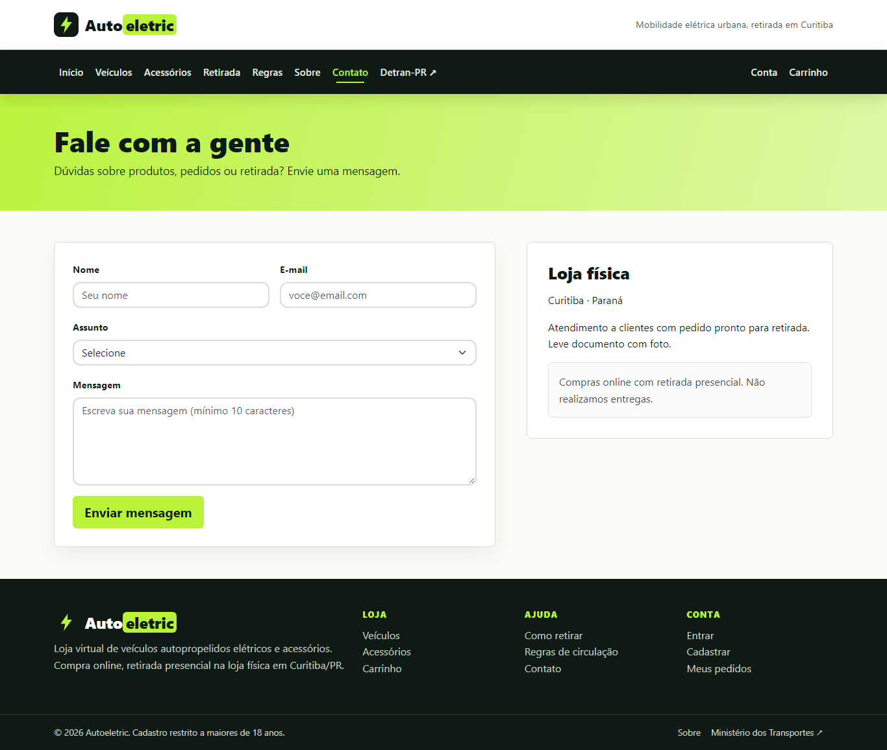
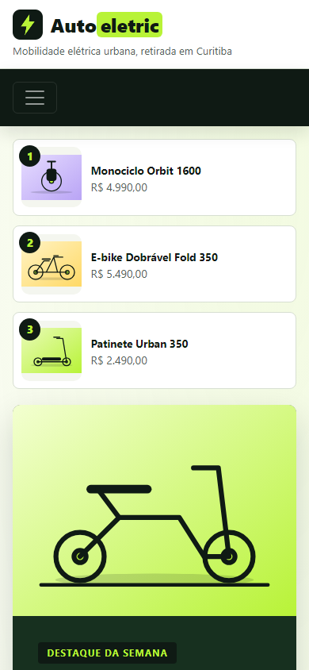
Cada página tem um atributo data-pagina no <body>, e o app.js executa só a função daquela página.
| Página | O que o JavaScript faz |
|---|---|
| Todas | Atualiza o contador do carrinho, mostra "Olá, nome" quando logado e o ano no rodapé. |
| Início | Monta os destaques, as categorias e as novidades a partir do dados.js. |
| Veículos e Acessórios | Busca por texto, filtro por categoria e ordenação por nome ou preço, sem recarregar a página. |
| Produto | Lê o ?id= da URL e monta a página com preço, estoque e ficha técnica. |
| Carrinho | Altera quantidades (limitadas ao estoque), calcula o total, abre o resumo da compra e gera o pedido, baixando o estoque. |
| Cadastro | Valida idade mínima de 18 anos, senhas iguais e e-mail repetido; salva o cliente. |
| Login | Confere e-mail e senha e volta para a página de origem. |
| Meus pedidos | Lista os pedidos do cliente com a linha de status e simula o avanço das etapas. |
| Contato | Valida e salva a mensagem e mostra a confirmação. |
| Regras | Filtra a tabela de regras pelos botões. |
| Regras e Sobre | Abre e fecha o menu no celular. |